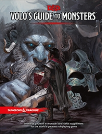

“Volo’s Guide to Monsters” on the
Shelf of Many Books

Volo’s Guide to Monsters
D&D 5
(5e)
Year
: 2016
ISBN
: 978-0-7869-6601-1
Volo’s Guide to Monsters
on Amazon
Volo’s Guide to Monsters
on Wizards of the Coast
Volo’s Guide to Monsters
on Wikipedia
Known monsters from the book:
Alchoon
Annis Hag
Aurochs
Babau
Banderhobb
Barghest
Bheur Hag
Bodak
Boggle
Brontosaurus
Catoblepas
Chitine
Choldrith
Cloud Giant Smiling One
Cow
Cranium Rat
Darkling
Darkling Elder
Death Kiss
Deep Scion
Deinonychus
Devourer
Dimetrodon
Dolphin
Draegloth
Elder Brain
Fire Giant Dreadnought
Firenewt Giant Strider
Firenewt Warlock of Imix
Firenewt Warrior
Flail Snail
Flind
Froghemoth
Frost Giant Everlasting One
Gauth
Gazer
Girallon
Gnoll Flesh Gnawer
Gnoll Hunter
Gnoll Witherling
Grung
Grung Elite Warrior
Grung Wildling
Guard Drake
Hadrosaurus
Hobgoblin Devastator
Iron Shadow
Ki-Rin
Kobold Dragonshield
Kobold Inventor
Kobold Scale Sorcerer
Korred
Leucrotta
Maw Demon
Meenlock
Mindwitness
Morkoth
Mouth of Grolantor
Neogi
Neogi Hatchling
Neogi Master
Neothelid
Nilbog
Orc Blade of Ilneval
Orc Claw of Luthic
Orc Hand of Yurtrus
Orc Nurtured One of Yurtrus
Orc Red Fang of Shargaas
Quetzalcoatlus
Quickling
Redcap
Sea Spawn
Shoosuva
Spawn of Kyuss
Stegosaurus
Stone Giant Dreamwalker
Storm Giant Quintessent
Swarm of Cranium Rats
Swarm of Rot Grubs
Tanarukk
Thorny
Tlincalli
Trapper
Ulitharid
Vargouille
Vegepygmy
Vegepygmy Chief
Velociraptor
Wood Woad
Xvart
Xvart Warlock of Raxivort
Yeth Hound
Yuan-Ti Anathema
Yuan-Ti Mind Whisperer
Yuan-Ti Pit Master